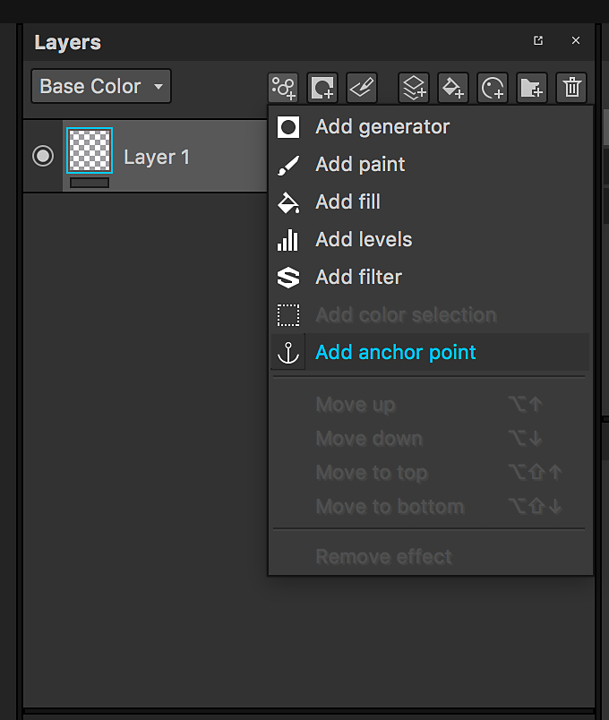
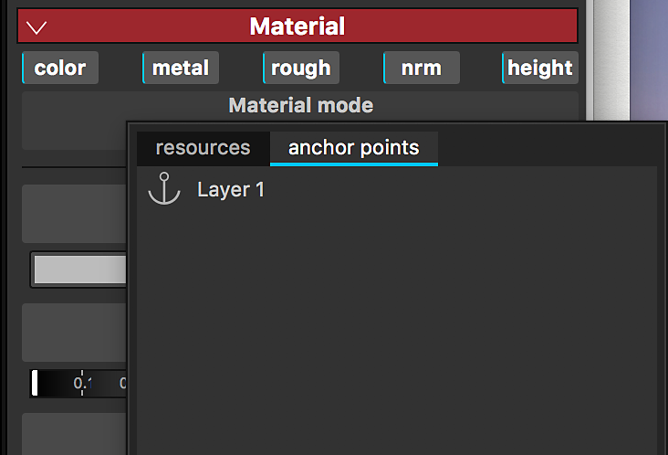
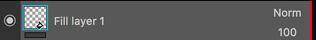
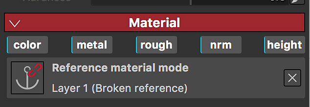
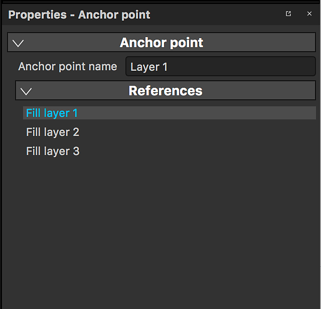
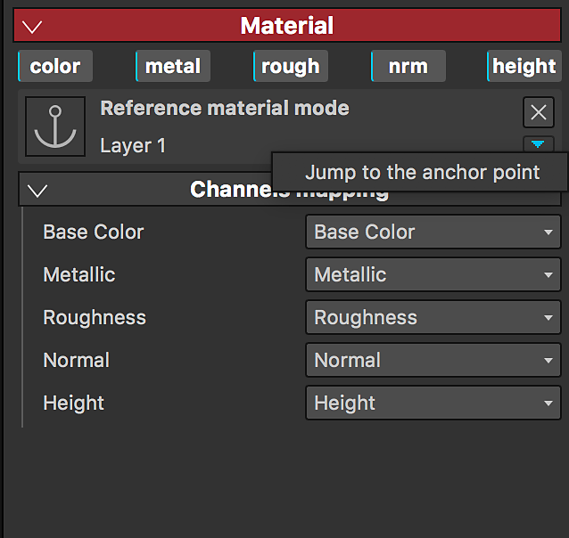

An Anchor Point is a way to expose any resource or element in the layer stack and reference it in different areas of the layer stack for different purposes and with a different set of adjustments. They open up a whole new set of possibilities, allowing you to effectively link layers or masks together and have a single Anchor point affect multiple aspects of your project, transforming Substance 3D Painter into a truly non-linear experience.
An anchor point can only be referenced inside the same texture is has been created. Creating links between an anchor and its reference(s) is not possible across Texture Sets.
Anchor Point are available in the Effects menu. They can be added on both layers and masks.

An Anchor Point can be referenced by another layer: this will instantiate the content of the anchor point into the layer referencing it.
Anchor Points can be used as a reference in the following resources:

Only Anchor Points which are below the layer referencing it can be used as references.
If you move an anchor point above a layer referencing it, it will break the reference. You can undo if you want to cancel this action.


When you click on an anchor point you can see in the properties the list of layers where this anchor point is used as a reference.

When you are a Fill layer / effect using an Anchor Point as a reference, you can jump to the anchor point.
